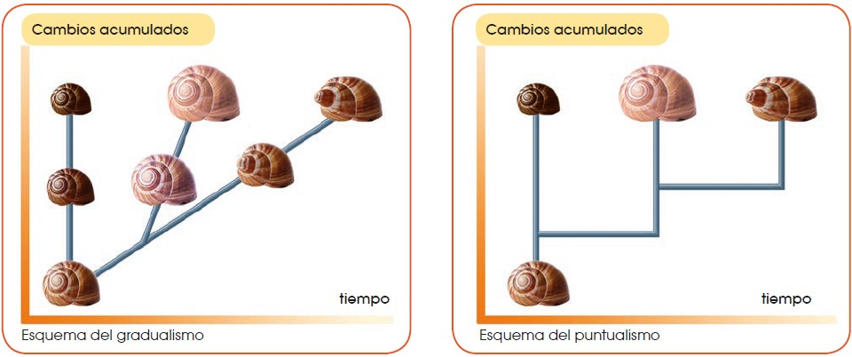

12 Evolución de la vida
12.1 El origen de las especies
A lo largo de la historia de la biología, siempre ha habido científicos que se han preguntado sobre el origen de la gran diversidad de especies.
En la antigua Grecia, pensadores como Anaximandro ya se planteaban el origen de las especies. Pero fue durante los siglos XIX y XX cuando se elaboraron más teorías al respecto.
Muchas veces estas teorías estaban más influidas por las creencias religiosas de la época que basadas en observaciones científicas exhaustivas. Ello conllevó numerosos problemas e incluso el descrédito de algunos científicos en desacuerdo con esas creencias.
A continuación, vamos a conocer algunas de estas teorías.
12.1.1 El fijismo y el catastrofismo
Ambas teorías estaban basadas en la interpretación literal de la Biblia. Decimos que son teorías creacionistas, porque consideraban que todos los seres vivos que existían en la Tierra tenían su origen en la Creación divina.
La teoría fijista
Según la teoría fijista, todas las especies tienen su origen en la Creación bíblica y se han mantenido tal y como fueron creadas hasta la actualidad. La teoría fijista fue aceptada durante muchos años como válida. La teoría fijista no podía explicar, entre otras cosas, la existencia de fósiles de muchas especies diferentes a las especies actuales.
La teoría catastrofista
Según la teoría catastrofista, hubo extinciones de algunas especies que coincidieron con las catástrofes descritas en la Biblia. Estas catástrofes explicarían la existencia de fósiles de especies que ya no existen.
Georges Cuvier (Francia, 1769-1832), uno de los naturalistas más conocidos de su época, fue el principal defensor de esta teoría. Según Cuvier, después de cada catástrofe, el espacio dejado por las especies extintas era ocupado por especies procedentes de otros lugares geográficos.
12.1.2 El lamarckismo
Esta teoría toma el nombre de Jean Baptiste de Monet, caballero de Lamarck. En 1809 Lamarck publicó su obra Filosofía zoológica, considerada la primera teoría evolucionista de la historia científica moderna.
Las teorías evolucionistas son todas aquellas teorías que proponen la diversidad actual de especies como fruto de cambios sucesivos en especies anteriores.
La teoría de Lamarck se puede resumir en los siguientes tres puntos:
Todas las especies actuales proceden de otras especies anteriores, a partir de las cuales se han originado mediante cambios sucesivos.
Estos cambios se han producido por un esfuerzo intencionado de los organismos, dirigido a mejorar ciertas cualidades. Estas cualidades mejoradas serán los llamados caracteres adquiridos.
Los caracteres adquiridos a lo largo de la vida de un organismo que resultan beneficiosos pasarán a sus descendientes.
El siguiente ejemplo hipotético esquematiza la teoría de Lamarck:
 |
 |
 |
| Los antecesores de las jirafas actuales serían unos animales de cuello corto parecidos a los okapis actuales. | Cuando escasea el alimento, los individuos se esfuerzan para llegar a las capas de follaje más altas. De esta manera se les alarga el cuello. | El carácter «cuello largo» pasa a los descendientes que, a su vez, alargarán más el cuello, y así sucesivamente hasta las jirafas actuales. |
12.1.2.1 Críticas al lamarckismo
En su época, Lamarck fue duramente atacado, especialmente por Cuvier. Los motivos por los que entonces se rechazó su teoría fueron:
Lamarck no aportó las pruebas necesarias, imprescindibles para sustentar cualquier teoría.
Los científicos de la época consideraban que existen muchos caracteres que a los organismos no les es posible fomentar voluntariamente, como por ejemplo, el color del pelaje.
Actualmente, no se aceptaría la teoría de Lamarck por dos razones:
Los caracteres que pasan a la descendencia son los caracteres heredables cuya información se encuentra en el ADN organizada en genes. Los organismos no pueden inducir cambios voluntariamente sobre el ADN y, por tanto, no hay intencionalidad en la evolución.
Los cambios físicos y fisiológicos que puede favorecer un organismo no afectan al ADN y, por tanto, no pasarán a sus descendientes.
12.2 El darwinismo
Charles Darwin (Shrewsbury, 1809 - Down, 1882) es uno de los científicos más conocidos e influyentes de la historia de la biología. Darwin destacó por sus grandes dotes como observador naturalista. El viaje de Darwin Después de abandonar los estudios de Medicina, Darwin emprendió un viaje alrededor del mundo a bordo del Beagle que duró cinco años (1831-1836). Durante este viaje llevó a cabo numerosas expediciones a tierra firme, en el transcurso de las cuales:
Observó las variaciones de diferentes poblaciones cercanas en el espacio, pero separadas por barreras geográficas, como las poblaciones de pinzones en las islas Galápagos.
Elaboró detalladas descripciones de toda la flora y la fauna que iba estudiando.
Tomó muestras de fósiles, animales y vegetales. Ejemplo: huesos de Megaterium que encontró en Sudamérica.
Posteriormente, dedicó su vida al estudio de las notas y las muestras recopiladas. Todos los datos que iba obteniendo de su estudio apuntaban hacia una teoría evolucionista. En 1858, un joven científico llamado Alfred Russel Wallace remitió sus teorías evolucionistas a Darwin. Viendo los numerosos puntos en común de las dos investigaciones, decidieron publicar conjuntamente sus opiniones en la revista de la Sociedad Linneana.
Un año después, en 1859, Darwin publicó su obra El origen de las especies, en la que exponía ampliamente la teoría sobre la evolución de las especies.
12.2.1 La teoría de Darwin
La teoría de la evolución de Darwin se asienta en tres puntos fundamentales:
La variabilidad: Las poblaciones de seres vivos no son uniformes, sino que presentan cierta variabilidad, mayor o menor en función de la especie observada. En un ambiente estable con suficientes recursos, las poblaciones mantienen el número de individuos y conservan su variabilidad.
La adaptación: Ante un cambio en el ambiente desfavorable a una especie, de entre toda la variabilidad existente, habrá algunos individuos que quizá presentarán unas características más adecuadas al nuevo ambiente. Estos individuos estarán mejor adaptados.
La selección natural: Los individuos mejor adaptados se reproducirán más fácilmente y dejarán más descendencia. Esta descendencia heredará los caracteres que determinan una mejor adaptación. Si la selección se repite en cada generación durante miles de años, toda la población presentará el carácter que determina una mejor adaptación.
El siguiente ejemplo esquematiza la teoría de Darwin:
 |
 |
 |
| Los antecesores de las jirafas actuales formaban una población con cierta variabilidad para el carácter «longitud del cuello»; ciertos individuos tenían el cuello más largo. | Cuando escasea el alimento, los individuos con el cuello más largo llegan mejor a las capas superiores del follaje. Están mejor adaptados. | Los individuos con el cuello más largo se reproducirán con mayor facilidad y dejarán más descendientes, aumentando su proporción en la siguiente generación. La selección natural seguirá actuando generación tras generación hasta dar lugar a las jirafas actuales. |
12.2.1.1 Críticas al darwinismo
En la sociedad científica de la época de Darwin, las teorías aceptadas sobre el origen de las especies eran creacionistas. La publicación de las teorías de Darwin causó un gran revuelo, siendo especialmente criticadas las teorías concernientes al origen del ser humano, ya que entraban directamente en conflicto con la teoría de la Creación divina bíblica.
Con el tiempo, la teoría de la evolución de Darwin fue aceptada y ha sido una de las aportaciones más influyentes en el campo de las ciencias de la vida.
No obstante, quedaron algunas preguntas que Darwin no pudo solucionar en su momento:
¿Cómo se generaba la variabilidad en la población de una determinada especie?
¿Cómo pasaban los caracteres de los progenitores a sus descendientes?
Debemos tener en cuenta que, pese a que los trabajos de Mendel fueron publicados en 1865, Darwin nunca llegó a conocerlos. No fue hasta más tarde cuando los conocimientos sobre genética permitieron dar respuesta a las preguntas que planteaba la teoría de Darwin.
12.2.1.2 Contexto sociocultural en la época de Darwin
El siglo XIX se caracteriza por las grandes transformaciones y contradicciones provocadas por la industrialización; las reivindicaciones y revoluciones burguesas, obreras y campesinas; la consolidación del capitalismo y el liberalismo, y el auge del conocimiento científico y del desarrollo tecnológico.
La nueva sociedad surgida de la industrialización y el establecimiento de nuevas disciplinas científicas favorecieron el desarrollo intelectual y el afán de conocimiento.
A pesar de todo, el mundo de mediados del siglo XIX aún no estaba preparado para asimilar las ideas revolucionarias de Charles Darwin.
La difusión de las teorías de Darwin constituyó la primera gran polémica científica, ya que contradecía las creencias basadas en la interpretación literal de la Biblia sobre la creación del mundo y de los seres vivos, al mismo tiempo que equiparaba al ser humano con el resto de las especies en su origen y evolución. El desarrollo de estudios posteriores confirmó las ideas de Charles Darwin y dio pie al reconocimiento de la ciencia, en todos sus ámbitos, y de los científicos como pilares básicos para el progreso de las sociedades modernas.
12.2.2 El viaje del Beagle
Poco después de graduarse en la Universidad de Cambridge, Charles Darwin fue invitado a embarcarse en el bergantín HMS Beagle para desempeñar labores de naturalista. Este barco realizó un viaje alrededor del mundo y sirvió a Darwin como herramienta para estudiar una gran variedad de paisajes, plantas, animales y accidentes geográficos.
El 27 de diciembre de 1831, el Beagle zarpó de Plymouth (Inglaterra) y no regresó hasta casi cinco años después, el 2 de octubre de 1836. El barco inició su travesía hacia Sudamérica, y recorrió gran parte de su costa, desde Bahía (Brasil) hasta las islas Galápagos (Ecuador) pasando por las costas de Uruguay, Argentina, Chile y Perú. La etapa americana del viaje duró cerca de cuatro años, después de los cuales, el Beagle se dirigió a Australia y Nueva Zelanda. Desde allí el viaje continuó por el sur de África hasta, finalmente, volver a Inglaterra.

12.2.2.1 Los pinzones de Darwin
Una de los animales que más llamó la atención de Darwin, durante su estadía en las islas Galápagos, fueron los pinzones. Darwin observó a las trece especies diferentes que existen en las islas, y todavía una especie más en el continente; y pudo comprobar que estas aves son muy similares entre sí excepto por la forma y tamaño de su pico.
A pesar de que todas estas especies forman parte del mismo grupo taxonómico y son muy cercanas entre sí, presentan una clara diferenciación en la estructura de su pico, lo cual se ha convertido en una de las pruebas más importantes a favor de la teoría darwinista de la evolución de las especies.
Después de numerosos estudios, se ha demostrado que la estructura del pico de los pinzones está directamente relacionada con la alimentación de cada uno de ellos y, por tanto, con los alimentos disponibles en cada isla del archipiélago de Galápagos.
De esta manera, existen pinzones que se alimentan de frutas, otros de insectos y otros de semillas. Los pinzones frugívoros tienen un pico similar al de un loro, preparado para romper los frutos; mientras que los que se alimentan de semillas tienen un pico grueso que les permite machacar las semillas con facilidad; mientras que los pinzones insectívoros tienen un pico más fino y alargado para alcanzar larvas o cazar insectos con facilidad
Este hecho es un claro ejemplo para ilustrar las ideas de Darwin sobre la evolución de las especies. Unas aves, en principio similares, pero con cierta variabilidad entre sus individuos, se vieron sometidas a distintos ambientes (en cada isla existían distintas condiciones ambientales y diferentes alimentos disponibles). Esto provocó que los individuos con distintas características fueran seleccionados en las islas en las que el ambiente les era más favorable y fueran desapareciendo en el resto de islas. De esta forma, los pinzones que consiguieron sobrevivir lo hicieron porque se adaptaron al medio en el que se encontraban. Como estos individuos se adaptaron mejor, tuvieron más descendencia, con lo que sus características se seguían repitiendo en las siguientes generaciones. De esta forma, la selección natural fue actuando hasta dejar en cada isla solamente pinzones con características adecuadas para la supervivencia en cada una de ellas.
12.2.3 El neodarwinismo
En 1900, dieciocho años después de la muerte de Darwin, se descubrieron los trabajos de Mendel. Este hecho, junto con los avances en los conocimientos sobre la reproducción celular, determinó el inicio del auge de la genética. Los conocimientos sobre genética fueron la clave para solucionar los interrogantes que planteaba la teoría de Darwin.
En la década de 1930 a 1940, diversos científicos incorporaron los conocimientos sobre genética a sus estudios y elaboraron la denominada teoría neodarwinista o sintética. Los neodarwinistas tomaron como base la teoría de Darwin, pero solucionaron los puntos para los que él no tuvo explicación, la variabilidad y la herencia, y ampliaron la teoría aplicando los nuevos descubrimientos en biología.
A continuación, veremos los mecanismos en los que se basa la evolución según la teoría sintética.
12.2.3.1 Mecanismos evolutivos
Según la teoría sintética, los mecanismos más importantes de la evolución son la mutación, la selección natural y la deriva génica.
12.2.3.1.1 Mutación
La mutación es un cambio permanente en el ADN. Si el cambio afecta a un gen, da lugar a la aparición de nuevos alelos y, por tanto, a nuevos fenotipos. Es una fuente de variabilidad.
Las mutaciones se producen al azar, por lo que no siempre representan una ventaja adaptativa.
Si afectan al ADN de los gametos, se pueden heredar y así pasar a los descendientes.
12.2.3.1.2 Selección natural
El número de individuos de la población de una determinada especie no puede crecer hasta el infinito, ya que los recursos del ambiente donde vive son limitados.
Normalmente, el número de individuos se mantiene constante hasta que un cambio en el entorno favorece el aumento del número de aquellos mejor adaptados. Este mecanismo es lo que conocemos como selección natural.
12.2.3.1.3 Deriva génica
La deriva génica es el cambio de proporción de un alelo de una generación a otra.
Puede dar lugar a la selección de un carácter aleatoriamente, es decir, sin que este carácter represente una ventaja aparente y sin que hayan variado las condiciones del entorno en el que se vive. Solo se da en poblaciones con un número reducido de individuos.
12.2.3.2 Un ejemplo de la evolución
En el período de 1850 a 1900 la industrialización en Inglaterra promovió una evolución en la coloración de las alas de la mariposa del abedul Biston betularia.
Esta evolución nos servirá de ejemplo para resumir la teoría neodarwinista.
La coloración de las alas de la Biston betularia era blanca. Esta coloración le permitía pasar desapercibida sobre la corteza blanca de los abedules.
En 1850 se describió un ejemplar de alas negras. Esta coloración se originó por mutación y aumentó la variabilidad de la población de mariposas del abedul.
Las mariposas de alas negras tenían una desventaja: eran más visibles sobre la corteza blanca y, por tanto, más fáciles de detectar para sus depredadores.
El aumento de las emisiones de humo por la creciente industria provocó el ennegrecimiento de la corteza de los abedules y, por tanto, un cambio en el ambiente de la Biston betularia.
Las mariposas de alas blancas pasaron a ser muy visibles sobre la corteza negra, por lo que eran más vulnerables a sus depredadores.
Las mariposas negras presentaban una ventaja al poder esconderse mejor, es decir, estaban mejor adaptadas al nuevo ambiente.
El número de mariposas blancas disminuyó mucho, ya que, al ser más visibles a los depredadores, fueron cazadas en mayor proporción.
Las mariposas negras podían protegerse mejor de sus depredadores y, por tanto, tenían mayor probabilidad de sobrevivir y también de dejar descendientes.
Como consecuencia, el número de mariposas negras aumentó, ya que eran seleccionadas positivamente por la selección natural, por lo que dejaban más descendientes que habían heredado el nuevo alelo.
Este fenómeno evolutivo observado por primera vez en la mariposa del abedul se ha descrito posteriormente en otros artrópodos; es el llamado melanismo industrial. Este se define como el cambio de color predominante a consecuencia del cambio ambiental provocado por la actividad industrial.
12.3 La especiación y las teorías actuales
Las teorías actuales sobre el origen de las especies toman como base la teoría sintética de la evolución, pero difieren entre ellas sobre todo en lo relativo al momento y al cómo se da la aparición de nuevas especies.
Una especie es un conjunto de individuos más o menos parecidos que son capaces de reproducirse entre ellos y dar lugar a descendencia fértil. El proceso de aparición de una nueva especie a partir de una preexistente es lo que llamamos especiación.
Para que se dé la especiación, deben producirse los siguientes fenómenos:
Un grupo de individuos de una determinada población evoluciona diferenciándose del resto de la población.
Ese grupo de individuos no puede reproducirse con la población inicial debido a que existe una separación física (ej.: vivir en dos islas diferentes) o temporal (ej.: épocas de fertilidad en distintas estaciones).
Las diferencias son cada vez mayores, hasta que llega un momento en el que si se intentaran reproducir dos individuos de cada una de las poblaciones, no llegarían a reproducirse o no tendrían descendencia fértil. Ya se trata de dos especies diferentes.
Según la interpretación evolucionista del origen de las especies científicamente aceptada, todas las poblaciones de especies actuales provienen de otras especies ancestrales a partir de las cuales se han originado. La biodiversidad actual no es más que el resultado de la evolución por especiaciones sucesivas desde los primeros seres vivos que poblaron la Tierra hace 3850 millones de años.
La historia y el parentesco evolutivo de una especie se pueden representar mediante un esquema en forma de árbol llamado cladograma.
En la actualidad, las dos teorías sobre el origen de las especies son el gradualismo y el puntualismo. Ambas son evolucionistas.
12.3.1 El gradualismo
El gradualismo sostiene que:
Una población de una especie determinada va acumulando cambios, fruto de la adaptación progresiva al entorno en el que vive.
La acumulación de cambios lleva a la aparición de variedades y subespecies primero y a la especiación después.
La aparición de nuevas especies es un proceso gradual que se da a lo largo de miles de años.
La principal crítica a esta teoría es la falta de fósiles de los hipotéticos pasos intermedios de muchas especies actuales. Los gradualistas defienden su postura sosteniendo que existieron ejemplares de los pasos intermedios pero que debido a las específicas condiciones de fosilización, se formaron fósiles de muy pocas especies.
12.3.2 El puntualismo
La teoría puntualista o del equilibrio puntuado fue enunciada en 1972 por Stephen Jay Gould (EE. UU., 1941-2002) y Niles Eldredge (EE. UU., 1943). La teoría del equilibrio puntuado sostiene que:
Una población de una especie determinada que vive en un ambiente que no varía se mantiene estable y sin cambios a lo largo del tiempo.
La especiación se dará en una porción pequeña de esa población que, por motivos diversos, se ha quedado aislada en un ambiente diferente.
Los cambios, lejos de ser graduales, se sucederán de forma brusca en un período corto de tiempo (cientos de años).
La teoría puntualista explicaría el hecho de no encontrar fósiles que muestren los cambios graduales. Los puntualistas sostienen su teoría como la principal, pero no excluyen que en determinados casos se pueda dar el modelo gradualista.

12.4 Tipos de selección natural
La selección natural es un proceso que actúa de forma inevitable sobre todos los seres vivos; pero no actúa siempre de la misma manera. Si la selección afecta a la distribución de la variabilidad dentro de una población podemos hablar de selección normalizadora o estabilizante, selección disruptiva y selección direccional.
12.4.1 Selección normalizadora
En este caso, los individuos que poseen una característica que les permite adaptarse mejor al medio son los que tienen rasgos intermedios; y el ambiente desfavorece a los individuos con características extremas. Por ejemplo, en un ambiente en el que salieran desfavorecidos tanto los individuos altos como los bajos, la población tendería a quedarse únicamente con individuos de talla mediana.
12.4.2 Selección disruptiva
Al contrario que en la normalizadora, este tipo de selección favorece los extremos a expensas de los individuos con características intermedias, y terminará creando dos especies distintas. Si tenemos en cuenta el ejemplo anterior, en este caso los individuos seleccionados serán tanto los altos como los bajos, y los individuos medianos terminarán por desaparecer.
12.4.3 Selección direccional
Este tipo de selección favorece el aumento de los individuos con una de las características extremas. Esto provocará que, con el paso del tiempo, todos los individuos cambien hacia el extremo favorable mientras que todos los demás dejarán de existir. Siguiendo con el ejemplo anterior, en un ambiente, lo más favorable puede ser una talla alta. Si esto ocurre, la población terminará por estar formada únicamente por individuos altos mientras que los bajos y medianos no existirían
12.4.4 Proceso de especiación
Es posible que nunca lleguemos a conocer con total seguridad todos los fenómenos que intervienen en la evolución de las especies, pero lo que está claro es que el proceso de evolución provoca que existan nuevas especies. A este fenómeno lo conocemos como especiación.
12.4.4.1 Aislamiento reproductivo
Para que los procesos de selección natural terminen generando nuevas especies, debe existir un aislamiento reproductivo entre grupos de individuos. En el momento en que dos grupos no pueden reproducirse entre ellos, se impide un intercambio de material genético, lo que provoca que los grupos aislados se diferencien entre ellos convirtiéndose en distintas especies.
El aislamiento reproductivo puede ocurrir de diversas formas, puede ser temporal o permanente; y puede ocurrir por la aparición de barreras geográficas o simplemente por causas ecológicas o de comportamiento de las especies. A continuación, vamos a ver los principales mecanismos de aislamiento:
Aislamiento geográfico: Una barrera geográfica como la aparición de una cordillera o un río separa a un grupo de individuos e impide que se reproduzcan entre ellos.
Aislamiento etológico o sexual: Grupos de individuos ocupan el mismo territorio pero por factores de comportamiento se rechazan sexualmente.
Aislamiento ecológico o en el hábitat: Grupos que viven en el mismo territorio pero en hábitats o ambientes distintos, por lo que no van a reproducirse entre ellos.
Aislamiento temporal o estacional: Grupos de individuos que ocupan el mismo territorio pero sus períodos reproductivos son en épocas distintas del año, por lo que será imposible que se apareen entre sí.
12.4.4.2 Mecanismo de especiación
En función de cómo se establecen las barreras, el tiempo que demora la especiación y el papel que juega el fenómeno de selección natural, los procesos de especiación pueden dividirse en dos grandes grupos: la especiación por divergencia y la especiación instantánea.
La especiación por divergencia es aquella en la que el aislamiento reproductivo ocurre de forma gradual. Dentro de esta categoría de especiación distinguimos varios modelos: alopátrico, simpátrico y parapátrico.
Especiación alopátrica: En este caso, lo primero que ocurre es la aparición de una barrera geográfica que divide a la población original en dos grupos de individuos. En principio, todos los individuos podrían reproducirse entre sí, pero la barrera es la que lo impide.
Transcurrido mucho tiempo, los individuos a cada lado de la barrera geográfica solo se habrán reproducido entre ellos y en cada lado se habrán fomentado características diferentes, hasta el punto en el que los dos grupos se convierten en especies distintas y ya no podrían volver a reproducirse entre ellos aunque se vuelvan a poner en contacto.
Especiación simpátrica: Aquí no existe ninguna barrera geográfica que separe a los individuos, sino más bien una barrera ecológica. Este tipo de barreras se crean por una diferenciación en el hábitat dentro de un mismo territorio. Por ejemplo, en América del Norte existe una especie de mosca en la que se diferencian dos grupos: unas que se alimentan de espino y otras que se alimentan de manzanos. Aunque son de la misma especie y viven en el mismo territorio, generalmente cada grupo de mosca se reproduce entre sí y no con las moscas del otro grupo. Con el paso del tiempo, estos dos grupos terminarán separándose en dos especies distintas y ya no será posible la reproducción entre ellas.
Especiación parapátrico: Este caso es similar a la especiación alopátrica pero no existe una barrera geográfica que separe a la población. Un grupo de individuos, en principio homogéneo, elige reproducirse únicamente con los individuos cercanos a ellos sin entrar en contacto con individuos que se encuentran en otra área de su territorio. Con el paso del tiempo, se forman grupos diferenciados que pueden llegar a convertirse en distintas especies en un mismo territorio y sin ningún tipo de barrera entre ellos.
La especiación instantánea se diferencia de la especiación por divergencia en que no necesita el paso del tiempo para que aparezcan distintas especies, sino que ocurre un cambio súbito. Este proceso es mucho más rápido pero puede durar mucho tiempo. La especiación por divergencia puede tardar miles de generaciones mientras que la instantánea puede requerir solamente una decena de generaciones.
Este tipo de especiación suele darse cuando ocurren fenómenos de deriva génica causados por el efecto fundador o por efectos de cuello de botella. A continuación, explicamos cada uno de ellos.
12.4.5 Deriva génica
La deriva génica es una fuerza que afecta al proceso evolutivo, pero diferenciado de la selección natural. Este fenómeno consiste en la pérdida de diversidad genética dentro de una población de forma azarosa, alterando la frecuencia de las características que aparecen en los individuos de un mismo grupo. Generalmente, actúa sobre las características menos frecuentes provocando que los caracteres frecuentes aparezcan siempre en todos los individuos. Esto provocaría una disminución de la diversidad en la población.
El efecto de la deriva génica es mucho más intenso en poblaciones pequeñas que en otras más grandes; y ocurre habitualmente cuando se dan situaciones de efecto fundador o cuello de botella.
Efecto fundador
Si de una población grande se separan algunos individuos que van a crear una nueva población, la nueva comunidad solo tendrá la información genética de los individuos que la han fundado, por lo que su diversidad genética será muy baja. Esto crea un riesgo, ya que si hay una característica negativa, se mantendrá en esa nueva población y habrá una alta probabilidad de que los individuos de esa población la expresen.
Un ejemplo claro del efecto fundador puede verse en algunas poblaciones humanas. Por ejemplo, los Amish son miembros de una orden que emigró de Alemania y Suiza a Estados Unidos y formaron una colonia de pocos individuos que presentan un alto porcentaje de consanguinidad, es decir, tienen descendencia entre familiares, y que permanecen aislados del resto de humanos. Los individuos de esta colonia presentan un alto porcentaje de una rara enfermedad en la que se combinan enanismo y polidactilia, esta enfermedad es común en esta población, pero muy rara en el resto del mundo.
Cuello de botella
El efecto cuello de botella es otro fenómeno que puede fomentar la existencia de deriva génica. Este efecto consiste en la disminución drástica de una población por efectos distintos a la selección natural. Al quedar un bajo número de individuos, cualquier característica rara que presenten los supervivientes se expresará mucho en las siguientes generaciones; e igualmente se disminuye la diversidad.
12.4.6 Selección natural versus selección artificial
La selección natural es uno de los fenómenos que provoca la evolución y la aparición de nuevas especies. Este proceso que ocurre de forma natural también puede ser algo forzado por el ser humano. A este fenómeno se le conoce como selección artificial, y los seres humanos llevamos mucho tiempo practicándola de forma consciente e inconsciente con la selección y cruces de distintos individuos en prácticas agrícolas y ganaderas.
En la selección artificial, somos los humanos los que decidimos las características que nos resultan beneficiosas y fomentamos su expresión en las siguientes generaciones, mientras que eliminamos las características que no nos son útiles.
Actualmente, la selección artificial se utiliza como técnica de control reproductivo para seleccionar las características de animales domésticos o de plantas cultivadas. En función de nuestras preferencias, dirigimos el proceso evolutivo ya sea de forma consciente porque determinamos qué individuos son los que queremos que se reproduzcan, o inconsciente, ya que en muchas ocasiones hacemos que plantas o animales domésticos se crucen entre sí sin tener el objetivo de obtener nuevas generaciones con las mismas características.
El ejemplo más cercano de selección artificial por parte del ser humano se puede observar en las razas de perro que conocemos actualmente. El perro (Canis lupus subespecie familiaris) no es más que una subespecie del lobo (Canis lupus) que ha evolucionado por el proceso de selección artificial debido a la domesticación por parte del ser humano.
El perro es posiblemente el primer animal domesticado por el hombre y, a lo largo de diez mil años de domesticación, hemos llegado a crear hasta 800 razas diferentes, todas ellas a partir de la selección artificial.
La selección artificial, sin embargo, tiene un riesgo, más aún en el caso de las razas de perro. La moda de poseer perros de raza pura hace que los cruces se realicen siempre entre individuos de la misma raza con lo que estamos provocando una deriva génica de forma artificial en la que disminuye la diversidad genética y, por ende, aumentamos el riesgo de que los perros que nacen tengan enfermedades hereditarias por la presencia de genes defectuosos.
12.5 Las pruebas de la evolución
Como sabemos, Darwin elaboró su teoría a partir de la observación de las especies en los diferentes ambientes y también a partir del estudio de fósiles. Desde entonces, los diversos científicos que han estudiado la evolución han tenido que encontrar pruebas que justificasen sus teorías.
Las principales pruebas de la evolución con las que contamos actualmente son el registro fósil, la anatomía comparada, los estudios de embriología comparada, los estudios de comparación de ADN y la biogeografía.
12.5.1 El registro fósil
El estudio de los fósiles ha permitido conocer las características de especies que dejaron de existir por uno de los siguientes motivos:
Su hábitat cambió, y como no estaban bien adaptadas al nuevo hábitat, se extinguieron.
Evolucionaron y dieron lugar a otras especies.
El registro fósil es una importante fuente de información para entender los cambios evolutivos de muchas especies, pero presenta ciertos problemas a la hora de interpretarlos.
Registro incompleto: Como hemos visto en la primera unidad, para que se forme un fósil se tienen que dar unas condiciones muy específicas. Ello supone que no disponemos de fósiles de todas las especies que han existido y, por tanto, hay huecos en la interpretación de la evolución de muchas especies.
Dificultad en la datación: Es muy importante datar un fósil para poder situarlo dentro de la historia evolutiva de una especie, pero no siempre es fácil hacerlo. Históricamente se ha utilizado la datación estratigráfica, basada en los estratos geológicos.
Actualmente, también se utilizan métodos fisicoquímicos, como la datación por carbono 14 (14C), que tiene un límite de datación de 70 000 años, o la datación por potasio 40 (40K), que se utiliza a partir de 100 000 años de antigüedad. El problema se da cuando la datación estratigráfica y la fisicoquímica no coinciden.
Tipo de restos fósiles: Debido a las características del proceso de fosilización, mayoritariamente solo se conservan restos óseos, ya que raramente fosilizan las partes blandas de los organismos.
12.5.2 La anatomía comparada
La actual diversidad de especies se ha generado por especiaciones sucesivas a partir de los primeros seres vivos. Por tanto, todos los seres vivos actuales estamos «emparentados » en mayor o menor grado. Este hecho se puede demostrar mediante la anatomía comparada, que se encarga del estudio y comparación de órganos de diferentes especies. En anatomía comparada se distinguen tres tipos de órganos:
- Órganos homólogos: Son órganos de especies diferentes que presentan la misma estructura pese a ser utilizados para funciones distintas. Esto significa que comparten un antepasado común del cual heredaron la estructura del órgano. Son órganos homólogos las extremidades anteriores del murciélago, la ballena, el ser humano.
- Órganos análogos: Son órganos de especies diferentes que tienen distinta estructura, pero una forma similar, ya que son utilizados para la misma función. Los órganos análogos son una prueba de la adaptación del grupo de especies al medio donde viven. Las aletas de una ballena y un pez óseo son órganos análogos.
Órganos vestigiales: Son estructuras que ya no se utilizan y que, a lo largo de la evolución de una especie, han quedado atrofiadas. Los órganos vestigiales son reminiscencias estructurales de órganos que eran útiles en los antepasados de una especie.
Un ejemplo de órgano vestigial es el tubérculo de Darwin en humanos, reminiscencia de la punta de la oreja que presentaría alguno de nuestros antepasados. En nuestros antepasados dicha punta sería parecida a la de los simios actuales.
12.5.3 La embriología comparada
En los animales con reproducción sexual, desde la fecundación hasta el nacimiento del nuevo individuo, el embrión va sufriendo una serie de cambios. La modalidad de la biología que se encarga del estudio de esos cambios es la embriología.
Si comparamos el desarrollo de los embriones de diferentes especies de vertebrados, observaremos que en los primeros estadios los embriones son casi idénticos entre sí. Las diferencias se van acentuando según avanza el desarrollo embrionario.
Cuanto más tiempo tarden en diferenciarse los embriones de dos especies, más próximas evolutivamente estarán estas dos especies. Observemos el desarrollo embrionario de varias especies: un pez, un ave y dos mamíferos (el ser humano y el chimpancé).
Comparación: Desarrollo embrionario de un pez, un ave, un chimpancé y un ser humano.
En los primeros estadios, los cuatro embriones son casi iguales. Se puede observar que incluso los embriones de especies con respiración pulmonar presentan branquias.
Las branquias han desaparecido y el embrión de pez y el de ave se distinguen perfectamente de los de mamífero.
El embrión de chimpancé y el humano siguen siendo iguales. Hasta el final del desarrollo embrionario no se aprecian las diferencias entre chimpancé y ser humano.
De ello podemos deducir que las especies ser humano y chimpancé estarán próximas evolutivamente.
12.5.4 La comparación del ADN
La información genética de todos los seres vivos está contenida en su ADN. Todos ellos comparten el mismo código genético y solo se diferencian por el número y el tipo de genes. Estas diferencias son debidas a que las especies van acumulando mutaciones como resultado del proceso evolutivo. Por tanto, dos especies se diferenciarán entre sí por el número y el tipo de mutaciones que han ido acumulando.
Las técnicas de ingeniería genética actuales permiten el análisis y secuenciación del ADN. Cuando se dispone de esta información, se puede comparar el material genético entre distintas especies. Así, dos especies evolutivamente cercanas presentarán menos diferencias en sus respectivas secuencias.
12.5.5 La biogeografía
Parte de la biología estudia la distribución geográfica de las diferentes especies.
Frecuentemente, se han estudiado grupos de especies muy parecidas que viven en entornos cercanos, pero aislados entre sí. De su estudio se puede deducir que las diferencias entre estas especies son fruto de las sucesivas adaptaciones que los individuos han ido haciendo a los nuevos hábitats a partir de una única especie antecesora.
La biogeografía, como prueba de la evolución, ya la utilizó Darwin. En su viaje a bordo del Beagle estudió la distribución de las diferentes especies de pájaros pinzones (Geospiza sp.) de las islas Galápagos. De esta distribución dedujo que los cambios evolutivos se pudieron suceder como resultado de la adaptación a cada nuevo ambiente.
12.6 La evolución humana
El ser humano actual pertenece a la especie Homo sapiens y forma parte del gran grupo de los primates. De todos ellos, los más cercanos al ser humano son: el orangután (Pongo sp.), el gorila (Gorilla sp.) y el chimpancé (Pan sp.), ya que compartimos un antepasado común y una serie de características:
Capacidad craneal elevada en comparación con su tamaño.
Visión en tres dimensiones. Gran importancia de la visión comparados con otros mamíferos en los que predomina el sentido del olfato.
Dedos pulgares oponibles en las cuatro extremidades. El ser humano ha perdido esta capacidad en los pulgares de los pies.
Tendencia al bipedismo; solo es completo en el ser humano.
Estructura y comportamiento en sociedad complejo.
Período de cuidado de las crías muy prolongado.
Ausencia de la cola presente en otros tipos de primates.
La única especie que actualmente existe del género Homo es el Homo sapiens, a la que se ha llegado después de un proceso evolutivo.
Llamamos hominización al conjunto de cambios que han dado lugar a la aparición del Homo sapiens.
12.6.1 La hominización
Entre los cambios evolutivos básicos del proceso de hominización, destacan la adquisición del bipedismo, el aumento de la capacidad craneal y el desarrollo de la cultura. A continuación, vamos a ver en detalle cada uno de ellos.
El bipedismo
Es la adquisición de la postura erguida sobre las extremidades posteriores. La anatomía comparada entre el ser humano y el chimpancé nos permitirá conocer los cambios y las ventajas que conlleva el bipedismo.
Comparación cimpancé - Ser humano
El peso del cuerpo recae en pies y piernas. Ello comporta un menor gasto energético en los desplazamientos.
|
Manos y brazos quedan libres, posibilitando el transporte de alimentos para compartir con las crías.
|
La cabeza se sitúa en la parte superior del eje central del cuerpo. Los bípedos pasan a tener un mayor alcance visual y a conocer mejor su entorno.
|
12.6.2 La capacidad craneal y la cultura
En la actualidad, consideramos relacionadas evolutivamente con el Homo sapiens las siguientes especies: Australopithecus afarensis, Homo habilis, Homo erectus, Homo antecessor y Homo neanderthalensis. Todas ellas están extinguidas.
El proceso de hominización está asociado a un aumento progresivo de la capacidad craneal. De forma paralela y seguramente relacionado con ella, observamos la aparición y evolución de la cultura en el género Homo. Desde un punto de vista biológico, la cultura es el conjunto de prácticas, comportamientos y sus manifestaciones que son transmisibles por aprendizaje y, por tanto, independientes de la genética.
En la siguiente tabla, aparecen las características craneales de estas especies relacionadas evolutivamente con el ser humano, así como las aportaciones culturales asociadas más relevantes.
| Especie. | Características generales. | Aportación cultural. |
|---|---|---|
| Australopithecus afarensis | Antigüedad: De 4 a 2,5 millones de años. Capacidad craneal: 450 cm3. Cara: Grande en comparación al cráneo y proyectada hacia delante. |
|
| Homo habilis | Antigüedad: De 2,5 a 1,6 millones de años. Capacidad craneal: 645 cm3. Cara: Más pequeña respecto al cráneo y menos proyectada hacia delante. |
Fabrica utensilios sencillos. |
| Homo erectus | Antigüedad: de 1,8 millones a 300 000 años. Capacidad craneal: 1000 cm3. Cara: Proyectada hacia delante y con prominentes arcos sobre los ojos. |
Cierta organización social Posible práctica de ritos funerarios Domina el fuego. |
| Homo antecessor | Antigüedad: De 1 millón a 500 000 años. Capacidad craneal: 1000 cm3. Cara: Similar al Homo erectus pero con mandíbula más prominente. |
Utensilios de piedra pulida. Práctica de ritos funerarios. |
| Homo neanderthalensis | Antigüedad: De 250 000 a 30 000 años. Capacidad craneal: 1550 cm3 (pero la corteza cerebral está menos desarrollada). Cara: Vertical con arcos sobre los ojos de menor grosor. |
Decora con pinturas rupestres. |
| Homo sapiens | Antigüedad: Desde hace unos 160 000 años. Capacidad craneal: 1400 cm3. Cara: Vertical con arcos sobre los ojos muy delgados. |
Desarrollo del lenguaje. Evolución cultural compleja que va desde los primeros Homo sapiens nómadas a la organización actual. |
12.6.3 El origen del ser humano actual
Todos los seres humanos actuales descendemos de una primera población ancestral de Homo sapiens que apareció en la Tierra hace aproximadamente 160 000 años. La datación del registro fósil indica que durante miles de años los Homo sapiens convivieron con otras especies de Homo, como el Homo neanderthalensis.
Este esquema representa la evolución humana y la expansión del Homo sapiens según las últimas teorías aceptadas por la mayor parte de la comunidad científica. Estas teorías combinan los datos que proporciona el registro fósil con los últimos estudios de comparación del ADN.
- El Austrolopithecus afarensis y el Homo habilis son los antepasados del Homo erectus.
- Una parte de la población de Homo erectus lleva a cabo una migración fuera de África. Esta población evolucionará a Homo antecessor y este será el ancestro del Homo neanderthalensis. Este punto es controvertido, ya que algunos científicos consideran que el Homo antecessor es únicamente una variedad de Homo erectus.
- El Homo sapiens tiene su origen en África. Desde allí, y después de diversas migraciones, se extiende por todo el mundo desplazando a otras especies del género Homo con las que coexistió.
Los caracteres que se analizan para conocer la variabilidad humana se basan, principalmente, en el análisis de proteínas y en la comparación de secuencias de ADN, y su finalidad es reconstruir el proceso evolutivo experimentado por la humanidad.
Todos los seres humanos pertenecemos a la subespecie conocida como Homo sapiens sapiens. La variabilidad que caracteriza actualmente a las distintas poblaciones humanas es consecuencia de la adaptación de nuestra especie a los diferentes ambientes de nuestro planeta.
Las características biológicas de nuestra especie se han mantenido prácticamente invariables desde hace 40 000 años; pero se ha producido una evolución muy importante que muchos especialistas denominan evolución cultural, determinada por la capacidad de aprender. El aprendizaje se realiza a partir de la información no genética (artística, científica, histórica, técnica…) que el ser humano recibe, tanto verticalmente de las generaciones que le precedieron como horizontalmente de sus contemporáneos, y de sus propias aportaciones. Este proceso ha modificado enormemente, sobre todo en las últimas décadas, el modo de vida de numerosas poblaciones humanas.
El futuro de la evolución humana es difícil de predecir, dado que la evolución cultural se produce a una velocidad muy superior a la de la evolución biológica. Además, hay que tener en cuenta que, a pesar de los grandes logros, existen dos graves problemas por resolver:
El bienestar que proporciona el progreso no es accesible a todos los seres humanos.
Las consecuencias del progreso, a menudo, influyen negativamente en el resto de los seres vivos y en el conjunto del planeta.
Nuestro objetivo, como seres conscientes de nuestra capacidad de evolucionar, debe ser conseguir una vida digna para todas las personas, en armonía con el medioambiente y con el resto de los seres vivos.
El color de la piel humana
Aunque todos los seres humanos pertenecemos a la misma especie, presentamos una gran diversidad fisonómica. El color de la piel es una de las características que más contribuye a la percepción de esta diversidad.
La diferente tonalidad de la piel es debida a la concentración variable de un pigmento, la melanina, que se sintetiza en unas células denominadas melanocitos.
Este pigmento es el responsable, no solo del color de la piel, sino también del color del cabello y del iris de los ojos. La distribución mundial del color de la piel se ha originado para regular los efectos de la radiación ultravioleta (UV).
Así, en aquellas zonas donde la radiación solar es muy intensa, la selección natural habría favorecido a aquellos individuos que presentaban genes que les conferían una pigmentación más oscura. De este modo se evitó, no solo la acción cancerígena de los UV, sino también la destrucción del ácido fólico, indispensable para el correcto desarrollo neurológico en el embrión. Del mismo modo, la escasez de rayos UV habría inducido una despigmentación generalizada para permitir que la exigua radiación solar pudiera penetrar y contribuir a la síntesis de vitamina D, esencial para la fijación de calcio en los huesos y dientes.
Según investigaciones recientes, la diferencia en la pigmentación humana depende de solo 4 o 5 genes (en nuestro genoma tenemos unos 35 000 genes).